⏱️
Tiempo perdido
El usuario no solo llega tarde: pierde margen de organización y necesita justificar una situación que no controla.
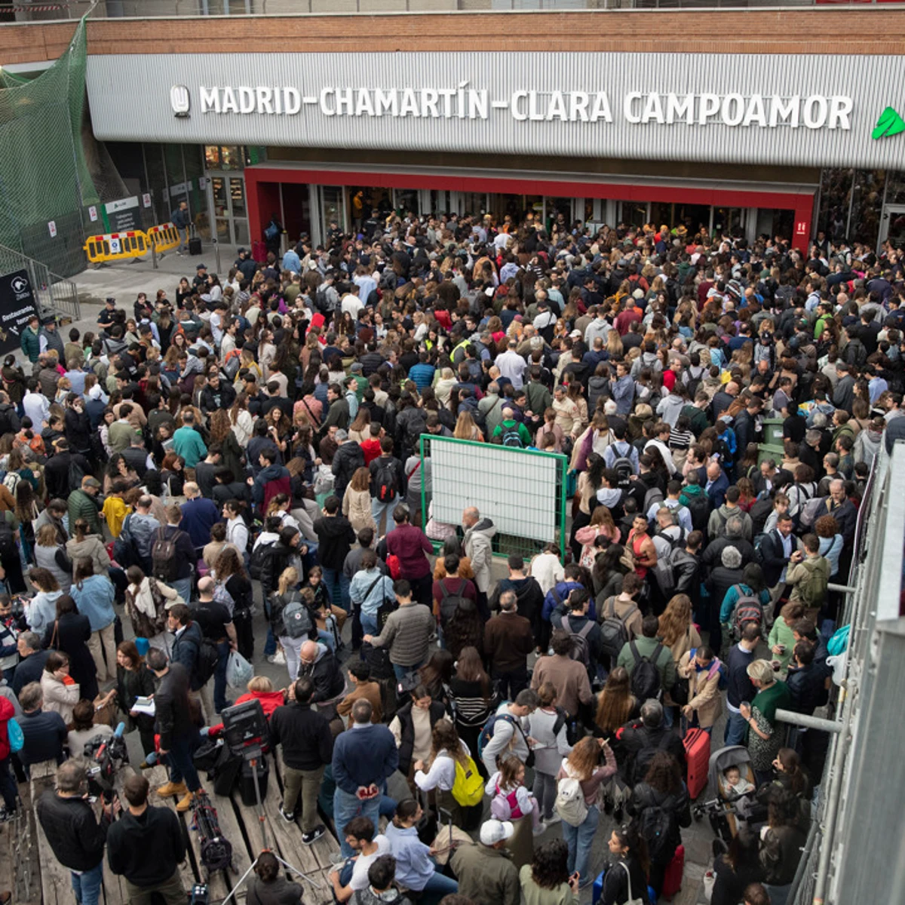
Registra retrasos, averías, cancelaciones o falta de información en pocos pasos. ReclamaCercanías genera una reclamación formal y un justificante reutilizable para tu trabajo, universidad o uso personal.
2 Min
Para registrar una incidencia.
IA
Para redactar la reclamación.
Justificante listo para compartir.
Incidencia detectada
C4 · Parla → Nuevos Ministerios
Tipo
Retraso y falta de información
Consecuencia
Llegada tarde al trabajo
Resultado
Reclamación + justificante generados
El problema
Retrasos, cambios de vía, trenes detenidos, cancelaciones y falta de información generan pérdidas de tiempo, estrés y explicaciones constantes ante empresas, universidades o compromisos personales.
El usuario no solo llega tarde: pierde margen de organización y necesita justificar una situación que no controla.
La falta de información clara aumenta la incertidumbre y dificulta documentar qué ha ocurrido realmente.
Los canales oficiales se perciben como lentos y burocráticos, justo cuando el usuario ya está agotado por la incidencia.
La solución
ReclamaCercanías permite registrar una incidencia en segundos, generar una reclamación formal con IA y crear un justificante reutilizable para compartirlo cuando haga falta.
Línea, estación, tipo de incidencia, tiempo perdido y consecuencia principal.
Texto formal, claro y listo para copiar, enviar o descargar.
Documento breve para empresa, universidad, citas médicas o uso personal.
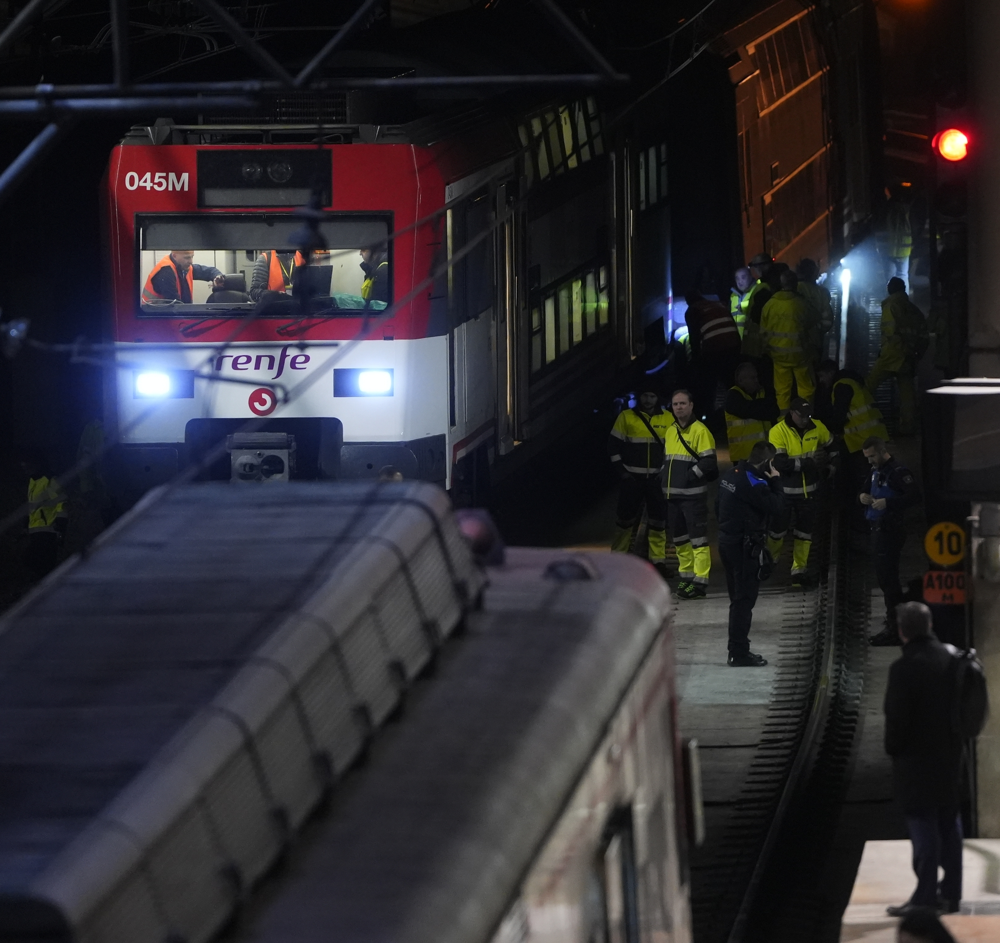
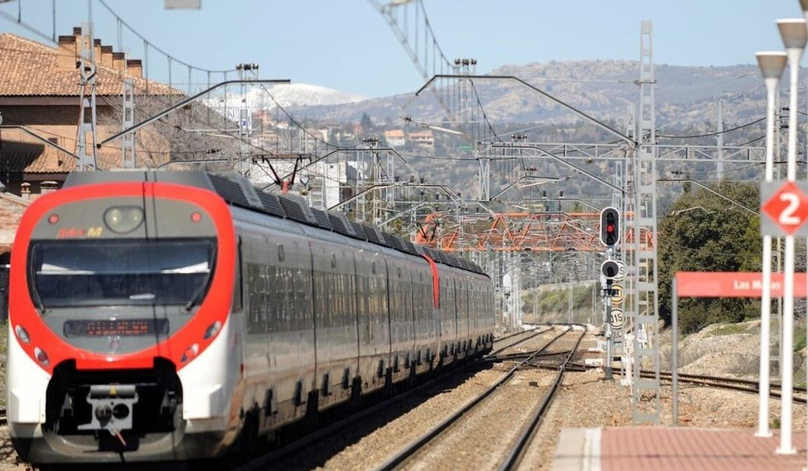
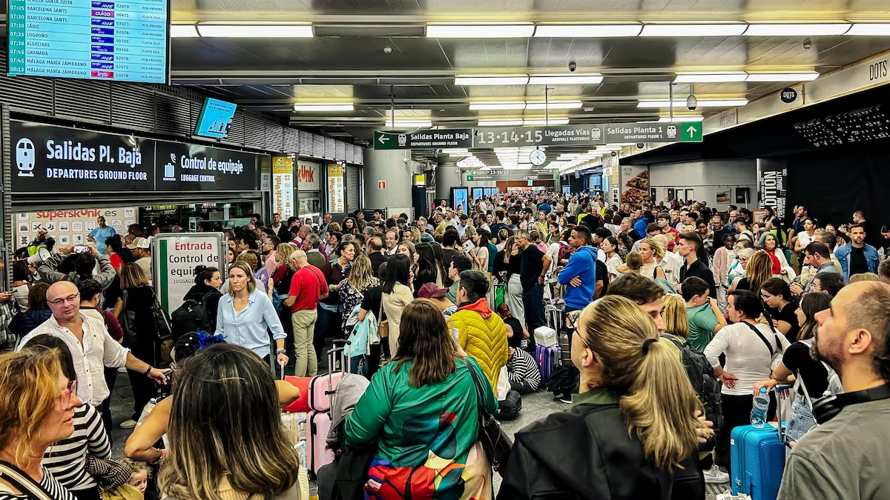
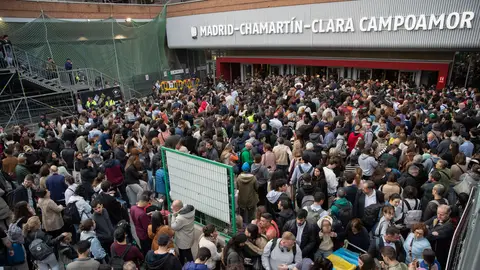
Usuarios impactados
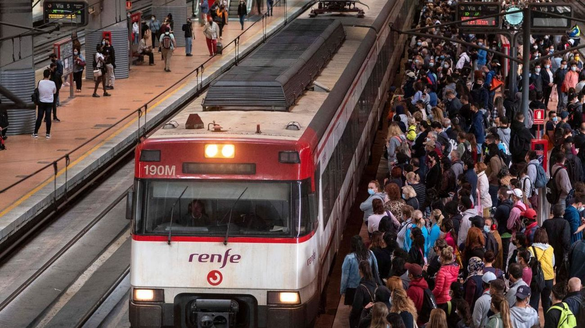
Necesitan justificar llegadas tarde sin perder más tiempo redactando explicaciones.
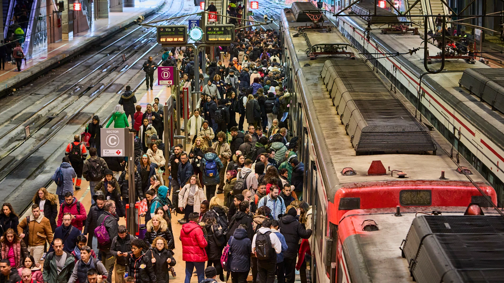
Llegar tarde a una clase, práctica o examen puede tener consecuencias reales.
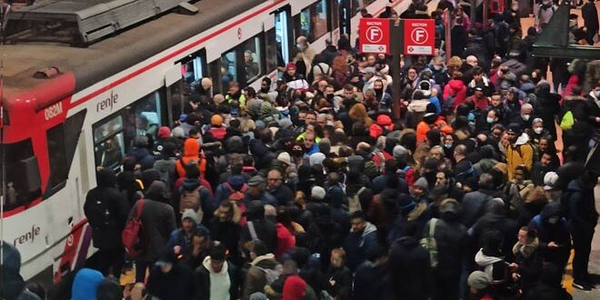
Sufren trayectos largos, retrasos acumulados y una fuerte sensación de abandono.
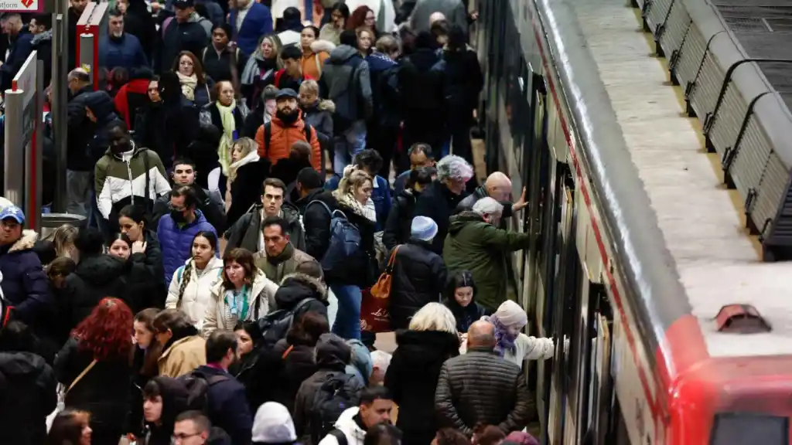
Buscan una forma sencilla de reclamar sin añadir más carga mental al problema.
Cómo funciona
01
Accedes al formulario de incidencia desde cualquier dispositivo.
02
Seleccionas línea, origen, destino, tipo de incidencia y tiempo perdido.
03
Subes captura, foto del panel, billete o mensaje si lo tienes.
04
Genera una reclamación formal y un justificante claro.
05
Copias, envías o descargas el documento final.
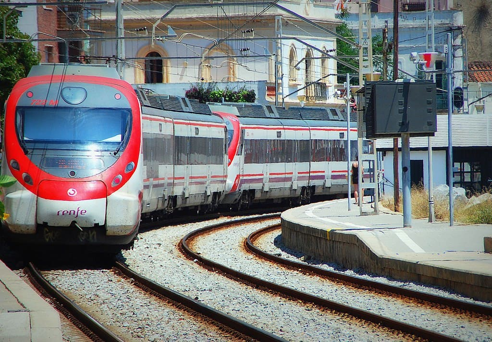
Estamos validando el prototipo de ReclamaCercanías con usuarios reales. Déjanos tus datos y ayúdanos a crear una herramienta útil, sencilla y centrada en quienes viven las incidencias cada día.
Participar en la validaciónContacto
Completa el formulario y te contactaremos para participar en la validación del prototipo. También puedes escribir directamente a elvirapro2020@gmail.com.
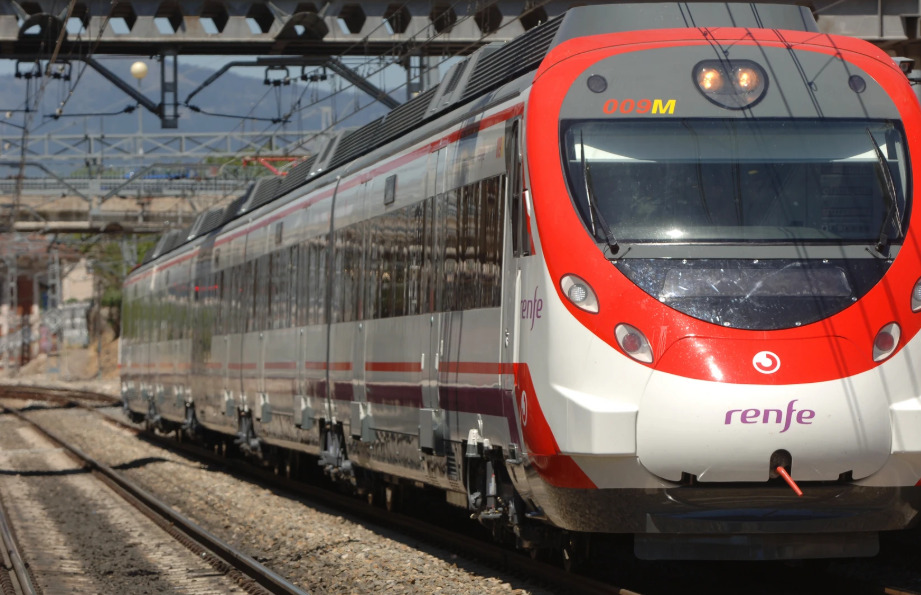